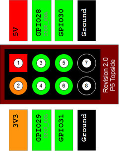
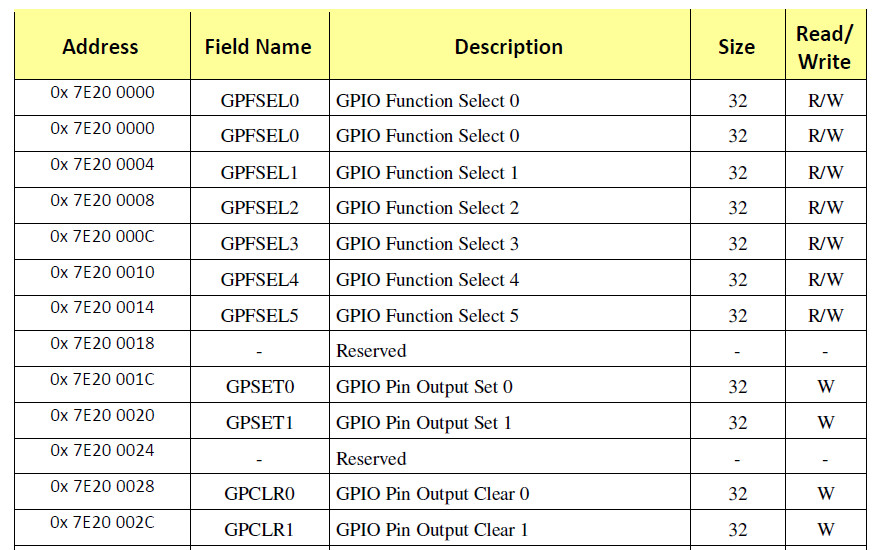
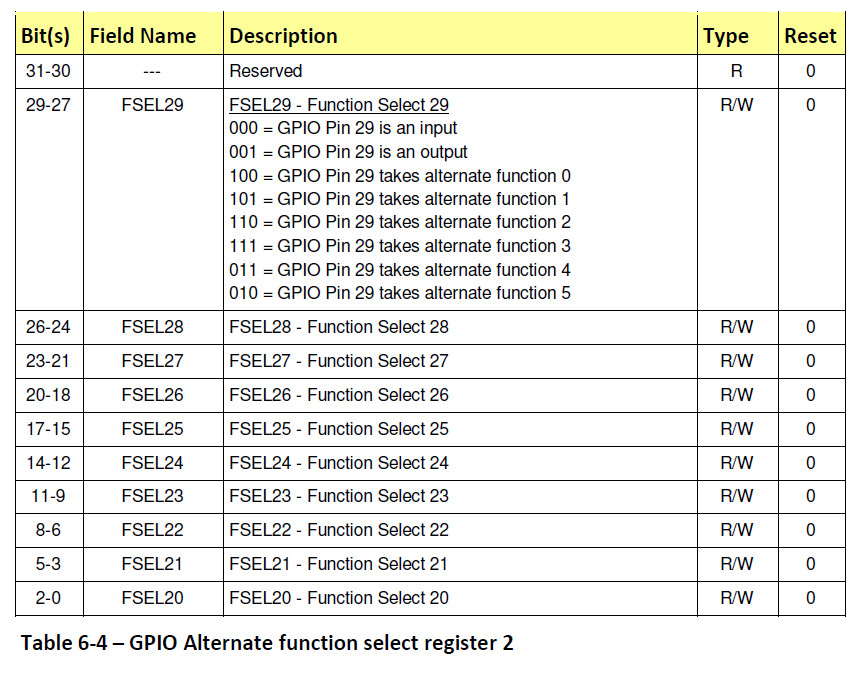
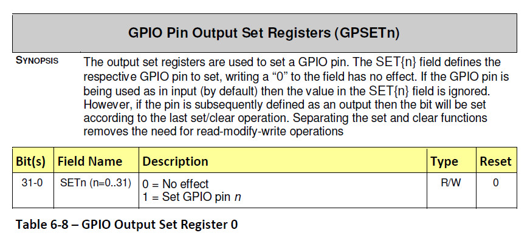
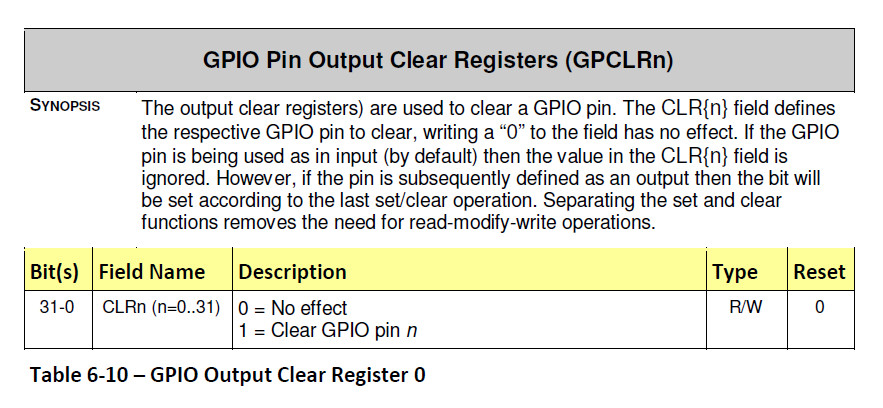
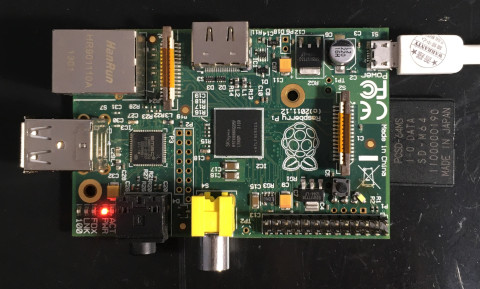
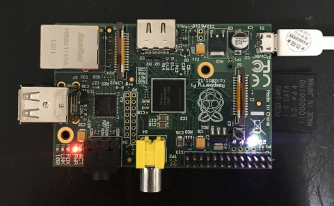

參考資料：
https://elinux.org/RPi_Software#ARM
https://github.com/dwelch67/raspberrypi
https://github.com/raspberrypi/firmware
https://www.raspberrypi.org/app/uploads/2012/02/BCM2835-ARM-Peripherals.pdf
LED連接到GPIO-29





.global _start
.equiv GPFSEL2, 0x20200008
.equiv GPSET0, 0x2020001c
.equiv GPCLR0, 0x20200028
.arm
.text
_start:
b reset
b .
b .
b .
b .
b .
b .
b .
reset:
ldr r0, =GPFSEL2
ldr r1, =(1 << 27)
str r1, [r0]
0:
ldr r0, =GPSET0
ldr r1, =(1 << 29)
str r1, [r0]
ldr r2, =0x100000
1:
subs r2, #1
bne 1b
ldr r0, =GPCLR0
ldr r1, =(1 << 29)
str r1, [r0]
ldr r2, =0x100000
1:
subs r2, #1
bne 1b
b 0b
.end
P.S. 實體位址是0x20000000，虛擬位址是0x7e000000
main.ld
MEMORY {
RAM : ORIGIN = 0x8000, LENGTH = 0x10000
}
SECTIONS {
.text : { *(.text*) } > RAM
.bss : { *(.bss*) } > RAM
}
Makefile
all: arm-none-eabi-as -mcpu=arm1176jzf-s -o main.o main.s arm-none-eabi-ld -T main.ld -o main.elf main.o arm-none-eabi-objcopy -O binary main.elf kernel.img clean: rm -rf kernel.img main.o main.elf
編譯
$ make
arm-none-eabi-as -mcpu=arm1176jzf-s -o main.o main.s
arm-none-eabi-ld -T main.ld -o main.elf main.o
arm-none-eabi-objcopy -O binary main.elf kernel.img
安裝步驟：
1. 將Micro SD格式化成FAT32
2. 將https://github.com/steward-fu/website/releases/download/pi-zero/bootcode.bin放到Micro SD根目錄
3. 將https://github.com/steward-fu/website/releases/download/pi-zero/start.elf放到Micro SD根目錄
4. 將kernel.img放到Micro SD根目錄
5. 插入Micro SD到Raspberry Pi Zero
完成

